Amazon Aurora가 2026년 11월 19일에 발표한 클러스터 VPC 이동 기능을 서울 리전에서 직접 테스트해 보았습니다. Aurora PostgreSQL, Aurora MySQL, Serverless v2 클러스터를 38회 옮긴 결과 데이터와 엔드포인트 이름은 그대로였습니다. 쓰기 중단은 VPC 간 이동 30회의 중앙값으로 24.7초였습니다. 하지만 엔진이 재시작하지 않고 연결이 오류 없이 끊기기 때문에 타임아웃이 없는 클라이언트는 963초 동안 멈췄고 서버에는 끊긴 세션의 잠금이 약 6분 동안 남았습니다.I tested the feature Amazon Aurora announced on November 19, 2026 for moving a cluster to a different VPC, in the Seoul Region. Over 38 moves of Aurora PostgreSQL, Aurora MySQL and Serverless v2 clusters the data and the endpoint names stayed. Writes were interrupted for a median of 24.7 s across 30 cross-VPC moves. But the engine does not restart and connections are cut without an error, so a client without timeouts stalled for 963 s and the locks of cut sessions stayed on the server for about six minutes.
Aurora 클러스터를 다른 VPC로 옮겨야 하는 경우는 드물지 않습니다. 서브넷의 IP 주소가 부족해 더 넓은 대역의 VPC가 필요한 경우와 다른 네트워크와 연결하려는데 CIDR이 겹치는 경우가 대표적입니다. 여러 VPC에 흩어진 클러스터를 공유 VPC로 모으는 경우와 보안과 규정 요구가 바뀐 경우도 여기에 해당합니다. 발표문과 Aurora 사용 설명서도 같은 예를 듭니다.
클러스터가 어느 VPC에 속하는지는 DB 서브넷 그룹이 정합니다. 지금까지는 클러스터를 만든 뒤에 이 값을 바꿀 수 없었습니다. 그래서 VPC를 바꾸려면 대상 VPC에 새 클러스터를 만들어 데이터를 옮겨야 했습니다.
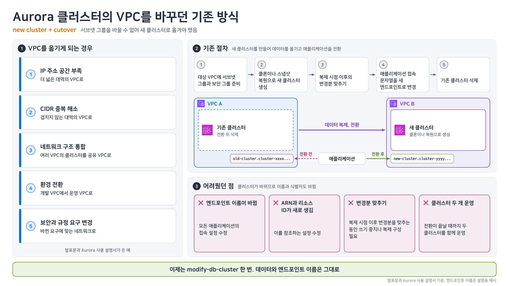
기존 절차는 대상 VPC에 서브넷 그룹과 보안 그룹을 준비하는 일에서 시작합니다. 다음으로 클론이나 스냅샷 복원으로 새 클러스터를 만들고 복제 시점 이후의 변경분을 새 클러스터에 맞춥니다. 그 뒤 애플리케이션의 접속 문자열을 새 엔드포인트로 수정하고 기존 클러스터를 삭제합니다.
이 방식이 어려웠던 이유는 새 클러스터가 기존 클러스터와 다른 리소스이기 때문입니다. 엔드포인트 이름이 달라지므로 접속하는 모든 애플리케이션의 설정을 수정해야 합니다. ARN과 리소스 ID도 새로 생겨서 이를 참조하는 설정을 함께 수정합니다. 클론과 스냅샷은 특정 시점의 사본이므로 그 뒤의 변경분을 맞추려면 쓰기를 멈추거나 복제를 구성해야 합니다. 전환이 끝날 때까지는 클러스터 두 개를 함께 운영합니다.
클론은 다른 VPC에 만들 수 있지만 문서에 따르면 두 VPC의 서브넷이 같은 가용 영역에 대응해야 합니다. 2026년 11월 19일의 발표는 이 작업을 API 호출 한 번으로 바꿨습니다. 이 글은 그 호출 한 번 동안 일어나는 일을 서울 리전에서 테스트한 기록입니다.
01
Amazon Aurora가 2026년 11월 19일에 발표한 클러스터 VPC 이동 기능을 서울 리전(ap-northeast-2)에서 테스트했습니다. Aurora PostgreSQL, Aurora MySQL, Aurora PostgreSQL Serverless v2 클러스터를 VPC 두 개 사이에서 38회 옮겼습니다. 유지 중이던 연결에서 쓰기가 멈춘 시간은 VPC 간 이동 30회의 중앙값으로 24.7초였습니다.
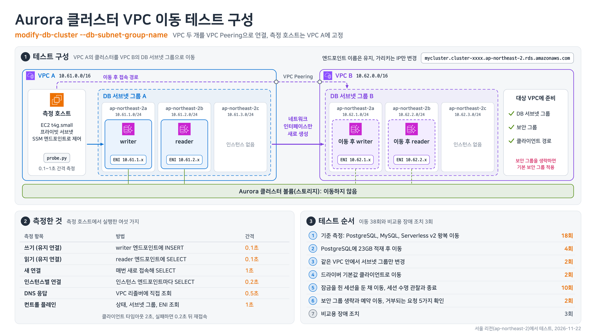
테스트 전에는 엔드포인트 이름이 바뀌지 않으므로 애플리케이션은 한 번 재접속하면 된다고 예상했습니다. 이 예상은 클라이언트에 타임아웃을 설정했을 때만 맞았습니다. 타임아웃을 설정하지 않은 클라이언트는 새 연결을 25초 만에 맺었지만 유지 중이던 연결은 963초 동안 응답을 기다렸습니다. 서버에는 끊긴 클라이언트의 세션이 약 6분 동안 남아 행 잠금을 쥐고 있었습니다.
| 확인할 항목 | 발표와 문서의 설명 | 테스트 결과 |
|---|---|---|
| 데이터 이동과 엔드포인트 | 데이터는 그대로 두고 클러스터 엔드포인트도 유지 | 엔드포인트 이름, ARN, 리소스 ID 유지. 23GB를 적재한 뒤에도 소요 시간이 같음 |
| 중단 시간 | 이동 중 연결이 잠시 중단됨. 시간은 적혀 있지 않음 | 쓰기 중단 중앙값 24.7초, 최소 18.1초, 최대 31.3초 (30회) |
| 지원 엔진 | Aurora PostgreSQL과 Aurora MySQL | 두 엔진과 Aurora PostgreSQL Serverless v2에서 38회 모두 성공 |
| 애플리케이션이 겪는 중단 | 이동 후 IP가 바뀌므로 DNS 이름으로 접속할 것 | 타임아웃 2초에서는 약 25초. 드라이버 기본값에서는 유지 중이던 연결이 963초 멈춤 |
| 이동 후 서버의 상태 | 설명 없음 | 엔진 재시작 없음. 끊긴 클라이언트의 세션과 잠금이 약 360초 남음 |
| 사전 조건을 어긴 요청 | 요청이 실패함 | 다섯 가지 모두 호출 시점에 거부. 서비스 영향 없음 |
표 1. 테스트 전에 세운 확인 항목과 결과. 2026년 11월 22일 서울 리전 기준
02
이번 발표로 ModifyDBCluster API가 DBSubnetGroupName 파라미터를 받습니다. 대상 VPC에 만들어 둔 DB 서브넷 그룹을 지정하면 Aurora가 클러스터의 모든 인스턴스를 그 서브넷 그룹으로 옮깁니다. AWS CLI에서는 modify-db-cluster의 --db-subnet-group-name 옵션입니다. 발표문은 Aurora PostgreSQL의 express configuration을 제공하는 리전에서 이 기능을 사용할 수 있다고 안내합니다. 서울 리전이 여기에 포함됩니다.
aws rds modify-db-cluster \
--db-cluster-identifier mycluster \
--db-subnet-group-name my-subnet-group-vpc-b \
--vpc-security-group-ids sg-0123456789abcdef0 \
--apply-immediately| 항목 | 새 클러스터로 옮기는 방식 | 클러스터 VPC 이동 |
|---|---|---|
| 절차 | 대상 VPC에 클론이나 복원으로 새 클러스터를 만들고 데이터를 맞춘 뒤 전환 | modify-db-cluster 한 번 |
| 데이터 | 새 클러스터로 복제하거나 복원 | 옮기지 않음 |
| 엔드포인트 | 새 이름. 애플리케이션 설정 수정 | 이름 유지. 가리키는 IP만 변경 |
| ARN과 리소스 ID | 새로 생김 | 유지 |
| 중단 | 전환 방식에 따라 다름 | 이번 테스트에서 약 25초 |
표 2. 기존 방식과 클러스터 VPC 이동의 차이. 오른쪽 열의 중단 시간은 이 글의 테스트 결과
인스턴스 단위 명령으로는 여전히 바꿀 수 없습니다. modify-db-instance에 --db-subnet-group-name을 지정하면 오류가 반환됩니다. 메시지는 You can't modify the subnet group of the DB instance because it is a member of a cluster.입니다. 같은 VPC의 다른 서브넷 그룹으로 바꾸는 경우에도 클러스터 단위의 같은 절차를 사용합니다.
가게 이전에 비유하면 이해하기 쉽습니다. 클러스터 엔드포인트 이름은 가게의 대표 전화번호이고 인스턴스의 IP는 건물 주소입니다. 이사를 해도 전화번호는 그대로이고 주소만 바뀝니다. 물건은 처음부터 별도 창고인 클러스터 볼륨에 보관돼 있으므로 옮길 것이 없습니다. 직원인 DB 엔진 프로세스는 일을 멈추지 않고 자리만 새 건물로 옮깁니다.
이사하는 순간 통화 중이던 손님은 끊겼다는 안내를 받지 못합니다. 손님이 스스로 끊고 다시 걸어야 하며 이것이 클라이언트 타임아웃입니다. 직원은 통화가 끊긴 줄 모르고 그 손님의 주문서를 한동안 들고 있습니다. 이것이 서버에 남는 세션과 잠금입니다.
비유가 실제와 다른 점도 있습니다. 가게는 이사하는 동안 창구 하나를 열어 둘 수 있지만 Aurora는 writer와 reader가 같은 순간에 끊깁니다.
03
테스트는 2026년 11월 22일 서울 리전의 한 계정에서 진행했습니다. 기존 VPC에 영향을 주지 않도록 실험용 VPC 두 개를 새로 만들어 VPC Peering으로 연결했습니다. 인터넷 게이트웨이와 NAT 게이트웨이는 두지 않았습니다.
| 항목 | 구성 |
|---|---|
| VPC | VPC A 10.61.0.0/16, VPC B 10.62.0.0/16. 각각 DB 서브넷 3개(ap-northeast-2a, 2b, 2c) |
| Aurora PostgreSQL | 17.9, db.r7g.large, writer(2a)와 reader(2b) |
| Aurora MySQL | 3.10.3(MySQL 8.0 호환), db.r7g.large, writer(2a)와 reader(2c) |
| Aurora PostgreSQL Serverless v2 | 17.9, 0.5~4 ACU, 인스턴스 1개(2c) |
| 측정 호스트 | VPC A 프라이빗 서브넷의 t4g.small, Amazon Linux 2023, Python 3.9, psycopg2 2.9.12, PyMySQL 1.2.4 |
| 호출 도구 | AWS CLI 2.42.1 |
표 3. 테스트 환경. 클러스터는 모두 스토리지를 암호화했고 퍼블릭 액세스를 비활성화함
대상 VPC에는 DB 서브넷 그룹과 보안 그룹을 미리 만들었습니다. 서브넷 그룹에는 클러스터의 인스턴스가 있는 가용 영역마다 서브넷이 필요합니다. 아래는 준비에 사용한 명령이며 ID는 가렸습니다.
# 클러스터의 인스턴스가 있는 가용 영역
aws rds describe-db-instances --filters Name=db-cluster-id,Values=avm-lab-pg \
--query "DBInstances[].[DBInstanceIdentifier,AvailabilityZone]" --output text
# avm-lab-pg-1 ap-northeast-2a
# avm-lab-pg-2 ap-northeast-2b
# 대상 VPC(VPC B)의 DB 서브넷 그룹: 2a, 2b, 2c의 서브넷
aws rds create-db-subnet-group --db-subnet-group-name avm-lab-sng-b \
--db-subnet-group-description "VPC B, three AZs" \
--subnet-ids subnet-0b1b1b1b1b1b1b1b1 subnet-0b2b2b2b2b2b2b2b2 subnet-0b3b3b3b3b3b3b3b3
# 대상 VPC의 보안 그룹: 클라이언트가 있는 VPC A 대역에서 DB 포트 허용
aws ec2 create-security-group --group-name avm-lab-db-sg-b --vpc-id vpc-0bbbbbbbbbbbbbbbb \
--description "avm-lab DB access in VPC B"
aws ec2 authorize-security-group-ingress --group-id sg-0bbbbbbbbbbbbbbbb \
--protocol tcp --port 5432 --cidr 10.61.0.0/16측정 프로그램은 VPC A에 고정한 EC2 인스턴스에서 실행했습니다. 클러스터가 VPC B로 옮겨 간 뒤에는 VPC Peering을 거쳐 접속합니다. 프로그램은 그림 2의 여섯 가지를 동시에 기록합니다.
INSERTSELECT이동은 모두 38회 실행했습니다. 중단 시간 통계에는 타임아웃 2초 클라이언트로 측정한 VPC 간 이동 30회를 사용했습니다. 나머지는 같은 VPC 안의 이동 2회, 드라이버 기본값 클라이언트 2회, 보안 그룹을 생략한 1회, 서버에 남는 세션을 추가로 확인한 3회입니다.
중단 시간은 연결별로 마지막 성공부터 다음 성공까지의 시간으로 계산했습니다. 기본 측정에서는 연결, 읽기, 쓰기 타임아웃을 2초로 두고 실패하면 0.2초 뒤에 다시 접속합니다. 그래서 중단 시간의 해상도는 약 2.2초이고 값이 22.5초, 24.7초, 26.9초 근처에 모입니다.
쓰기마다 일련번호를 붙였으므로 실행이 끝난 뒤 테이블의 번호 전체를 읽어 성공 응답을 받은 번호와 대조했습니다. 엔진 재시작 여부는 PostgreSQL의 pg_postmaster_start_time()과 MySQL의 Uptime 값이 이동 전후로 이어지는지로 판단했습니다.
04
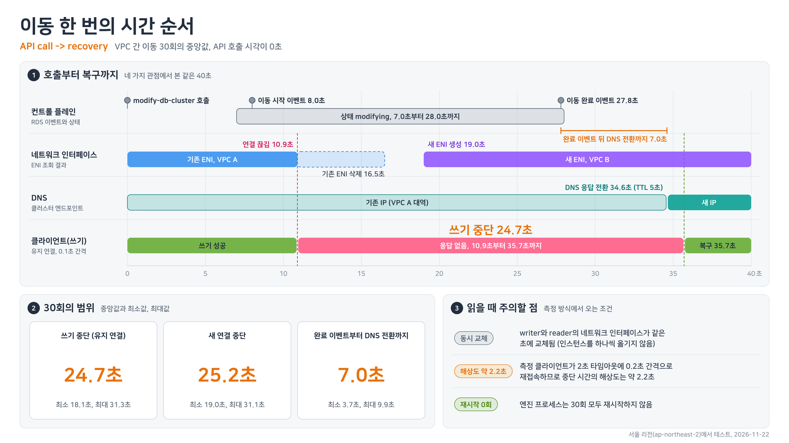
API를 호출하면 8.0초 뒤에 이동 시작 이벤트가 기록되고 10.9초에 연결이 끊깁니다. 기존 네트워크 인터페이스는 16.5초에 삭제되고 대상 VPC의 새 네트워크 인터페이스는 19.0초에 생깁니다. 이동 완료 이벤트는 27.8초, DNS 응답이 새 IP로 바뀌는 시점은 34.6초, 쓰기가 다시 성공한 시점은 35.7초입니다. 이벤트 문서에 따르면 시작 이벤트는 RDS-EVENT-0673, 완료 이벤트는 RDS-EVENT-0674입니다.
| 시점 | 중앙값 | 최소 | 최대 |
|---|---|---|---|
| 이동 시작 이벤트 | 8.0 | 3.1 | 13.1 |
| 연결 끊김(마지막으로 성공한 쓰기) | 10.9 | 5.5 | 17.3 |
| 기존 네트워크 인터페이스 삭제 | 16.5 | 11.0 | 24.0 |
| 새 네트워크 인터페이스 생성 | 19.0 | 13.0 | 25.0 |
| 이동 완료 이벤트 | 27.8 | 22.6 | 35.8 |
| DNS 응답이 새 IP로 전환 | 34.6 | 27.3 | 42.4 |
| 쓰기 복구 | 35.7 | 28.4 | 42.0 |
표 4. API 호출 시각을 0으로 둔 각 시점(초). VPC 간 이동 30회. 이벤트 메시지는 The VPC configuration modification for DB cluster ... has started.와 ... has completed.
아래는 첫 번째 이동에서 실행한 명령과 응답입니다. 응답은 관련 필드만 추렸고 보안 그룹 ID는 가렸습니다. 호출 응답에는 이동 전의 서브넷 그룹이 그대로 표시되고 대기 중인 변경으로 VPCNetworkingEnabled만 나타납니다.
# 이동 전 상태
aws rds describe-db-clusters --db-cluster-identifier avm-lab-pg \
--query "DBClusters[0].[Status,DBSubnetGroup,VpcSecurityGroups[].VpcSecurityGroupId]"
# ["available", "avm-lab-sng-a", ["sg-0aaaaaaaaaaaaaaaa"]]
# 이동 호출 (03:50:11 UTC)
aws rds modify-db-cluster --db-cluster-identifier avm-lab-pg \
--db-subnet-group-name avm-lab-sng-b \
--vpc-security-group-ids sg-0bbbbbbbbbbbbbbbb --apply-immediately \
--query "DBCluster.[Status,DBSubnetGroup,PendingModifiedValues]"
# ["available", "avm-lab-sng-a", {"VPCNetworkingEnabled": true}]
# 이벤트
aws rds describe-events --source-type db-cluster --source-identifier avm-lab-pg --duration 10 \
--query "Events[].[Date,Message]" --output text
# 2026-11-22T03:50:18.483000+00:00 The VPC configuration modification for DB cluster avm-lab-pg has started.
# 2026-11-22T03:50:35.026000+00:00 The VPC configuration modification for DB cluster avm-lab-pg has completed.
# 이동 후 상태
aws rds describe-db-clusters --db-cluster-identifier avm-lab-pg \
--query "DBClusters[0].[Status,DBSubnetGroup,VpcSecurityGroups[].VpcSecurityGroupId]"
# ["available", "avm-lab-sng-b", ["sg-0bbbbbbbbbbbbbbbb"]]같은 이동을 측정 프로그램은 아래처럼 기록했습니다. 559번 쓰기까지 성공하고 560번 쓰기가 2.5초 뒤 타임아웃으로 실패한 다음 기존 IP로 재접속을 시도합니다. DNS 응답이 바뀐 뒤에는 새 IP에서 561번부터 이어집니다. 오류 문구는 앞부분만 실었습니다.
# 쓰기 연결 (시각은 UTC, ms는 걸린 시간)
03:50:19.466 {"ev": "q", "ok": true, "ms": 2.9, "ip": "10.61.1.143", "inst": "avm-lab-pg-1", "seq": 559}
03:50:19.566 {"ev": "q", "ok": false, "ms": 2491.0, "seq": 560, "err": "could not receive data from server: Connection timed out"}
03:50:22.057 {"ev": "connect", "ok": false, "ms": 2005.5, "ip": "10.61.1.143", "err": "connection to server at \"10.61.1.143\", port 5432 failed: timeout expired"}
... (같은 실패 8회)
03:50:41.917 {"ev": "connect", "ok": false, "ms": 2003.9, "ip": "10.61.1.143", "err": "connection to server at \"10.61.1.143\", port 5432 failed: timeout expired"}
03:50:44.121 {"ev": "connect", "ok": true, "ms": 21.7, "ip": "10.62.1.133"}
03:50:44.221 {"ev": "q", "ok": true, "ms": 5.2, "ip": "10.62.1.133", "inst": "avm-lab-pg-1", "seq": 561}
# 클러스터 엔드포인트의 A 레코드와 TTL (값이 바뀐 시점만)
03:49:23.567 ['10.61.1.143'] ttl 5
03:50:42.076 ['10.62.1.133'] ttl 4
03:50:42.587 ['10.61.1.143'] ttl 2
03:50:44.117 ['10.62.1.133'] ttl 4완료 이벤트는 복구 시점이 아닙니다. 완료 이벤트가 기록된 뒤 DNS 응답이 바뀔 때까지 중앙값으로 7.0초(최소 3.7초, 최대 9.9초)가 더 걸렸습니다. 그동안 클라이언트는 기존 IP로 접속을 시도합니다. 엔드포인트 레코드의 TTL은 5초였습니다. 이동을 자동화할 때 완료 이벤트 직후의 접속 검사에는 재시도를 두는 것을 권고합니다.
writer와 reader는 함께 끊깁니다. 컨트롤 플레인 로그에서 두 인스턴스의 네트워크 인터페이스는 같은 초에 분리됐고 같은 초에 새로 생겼습니다. reader 엔드포인트로 읽기를 분산한 애플리케이션도 이동 중에는 읽기와 쓰기가 함께 멈춥니다.
끊기는 순간 클라이언트는 오류를 받지 않습니다. 유지 중이던 연결은 2초 타임아웃이 지난 뒤에야 실패했습니다. 오류는 PostgreSQL에서 Connection timed out, MySQL에서 Lost connection to MySQL server during query였습니다. 서버가 연결을 닫은 것이 아니라 응답이 사라진 것입니다.
30회 가운데 첫 실행에서만 DNS 응답이 약 4초 동안 기존 IP와 새 IP를 오갔고 그 사이 새 연결 한 번이 기존 IP로 향해 실패했습니다. 나머지 실행에서는 응답이 한 번에 바뀌었습니다.
05
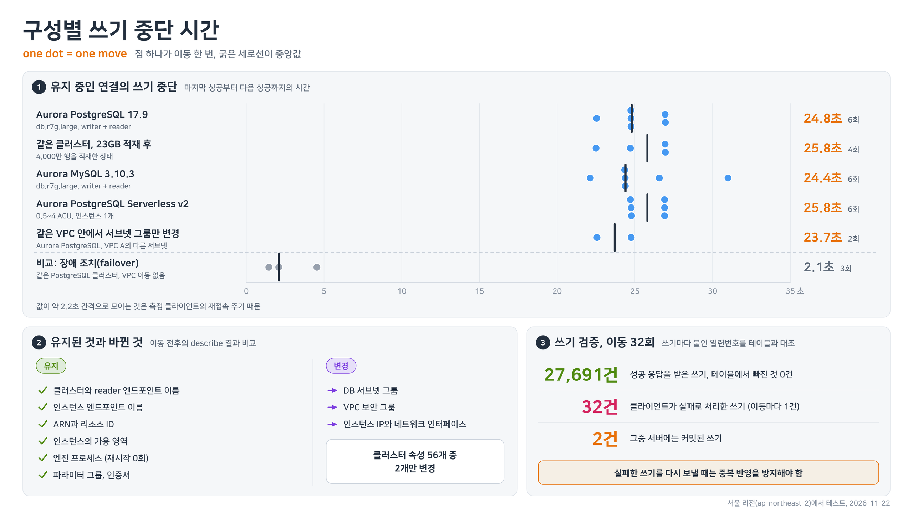
| 구성 | 횟수 | 중앙값 | 최소 | 최대 |
|---|---|---|---|---|
| Aurora PostgreSQL 17.9, 데이터 0.2GB | 6 | 24.8 | 22.5 | 27.0 |
| Aurora PostgreSQL 17.9, 데이터 23GB | 4 | 25.8 | 22.5 | 27.0 |
| Aurora MySQL 3.10.3 | 6 | 24.4 | 22.1 | 31.0 |
| Aurora PostgreSQL Serverless v2 | 6 | 25.8 | 24.7 | 26.9 |
| 같은 VPC 안에서 서브넷 그룹만 변경 | 2 | 23.7 | 22.6 | 24.8 |
| 비교용 장애 조치(같은 PostgreSQL 클러스터) | 3 | 2.1 | 1.5 | 4.5 |
표 5. 구성별 쓰기 중단 시간(초). 유지 중인 연결, 타임아웃 2초 조건. VPC 간 이동 30회에는 위의 22회와 잠금 실험에서 실행한 8회가 포함됨
구성에 따른 차이는 측정 해상도인 약 2.2초 안에 있습니다. PostgreSQL 클러스터에 4,000만 행(23GB)을 적재한 뒤에도 중앙값은 25.8초였습니다. 이동하는 대상이 네트워크 인터페이스이고 데이터는 옮기지 않기 때문입니다.
같은 VPC 안에서 서브넷 그룹만 바꿔도 22.6초와 24.8초가 걸렸습니다. 서브넷을 정리하려고 서브넷 그룹을 바꾸는 경우에도 VPC를 옮길 때와 같은 중단을 계획해야 합니다.
같은 PostgreSQL 클러스터에서 장애 조치를 3회 실행해 같은 방법으로 측정한 쓰기 중단은 1.5초, 2.1초, 4.5초였습니다. VPC 이동의 중단은 장애 조치보다 5배 이상 깁니다. 장애 조치를 기준으로 재시도 횟수나 대기 시간을 정한 애플리케이션은 VPC 이동을 버티지 못할 가능성이 있습니다.
| 구분 | 속성 |
|---|---|
| 유지 | 클러스터, reader, 인스턴스 엔드포인트 이름. 클러스터와 인스턴스의 ARN과 리소스 ID. 인스턴스의 가용 영역과 생성 시각. 파라미터 그룹과 인증서. 엔진 프로세스 |
| 변경 | DB 서브넷 그룹, VPC 보안 그룹, 인스턴스의 프라이빗 IP와 네트워크 인터페이스 |
표 6. 이동 전후의 describe-db-clusters와 describe-db-instances 결과를 비교한 내용. 클러스터 속성 56개 가운데 서브넷 그룹과 보안 그룹 두 개만 바뀜
쓰기 검증에서는 유실이 없었습니다. 이동 32회 동안 성공 응답을 받은 쓰기 27,691건이 모두 테이블에 있었습니다. 클라이언트가 실패로 처리한 쓰기는 이동마다 1건씩 32건이었고 그중 2건은 서버에 커밋돼 있었습니다. 응답을 받지 못한 쓰기는 성공했을 수도 있으므로 다시 보낼 때는 중복 반영을 방지해야 합니다.
06
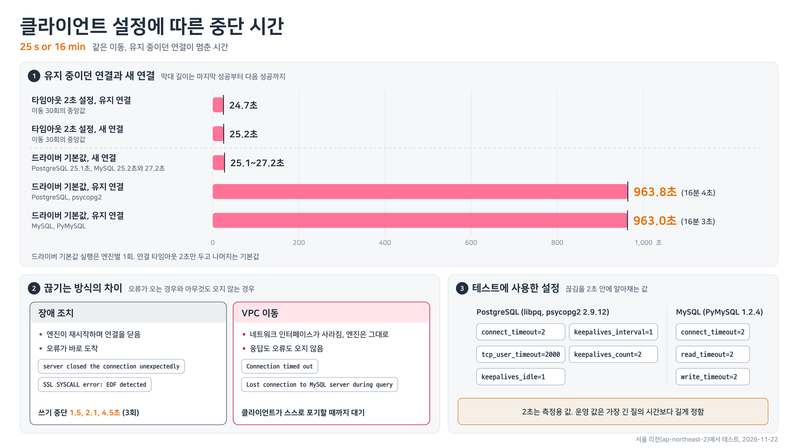
같은 이동을 타임아웃 설정이 없는 클라이언트로 반복했습니다. 연결 타임아웃만 2초로 두고 나머지는 드라이버 기본값으로 둔 조건입니다.
| 클라이언트 | 유지 중이던 연결 | 새 연결 | 유지 중이던 연결이 받은 오류 |
|---|---|---|---|
| 타임아웃 2초 (30회 중앙값) | 24.7초 | 25.2초 | 2초 뒤 Connection timed out |
| 드라이버 기본값, PostgreSQL(psycopg2) | 963.8초 | 25.1초 | could not receive data from server: Connection timed out |
| 드라이버 기본값, MySQL(PyMySQL) | 963.0초 | 25.2초 | Lost connection to MySQL server during query ([Errno 110] Connection timed out) |
표 7. 클라이언트 설정별 중단 시간. 드라이버 기본값 실행은 엔진별 1회이며 PostgreSQL은 Serverless v2 클러스터에서 측정
드라이버 기본값 실행에서 PostgreSQL 쓰기 연결이 남긴 기록입니다. 355번 쓰기 한 건이 963.5초 동안 돌아오지 않았고 재접속까지 포함한 중단은 963.7초였습니다. 같은 실행의 인스턴스 엔드포인트 연결은 963.8초 동안 멈췄습니다.
04:16:36.184 {"ev": "q", "ok": true, "ms": 3.6, "ip": "10.61.3.54", "inst": "avm-lab-sv2-1", "seq": 354}
04:16:36.284 {"ev": "q", "ok": false, "ms": 963532.7, "seq": 355, "err": "could not receive data from server: Connection timed out"}
04:32:39.817 {"ev": "connect", "ok": true, "ms": 29.7, "ip": "10.62.3.201"}
04:32:39.917 {"ev": "q", "ok": true, "ms": 9.8, "ip": "10.62.3.201", "inst": "avm-lab-sv2-1", "seq": 356}새 연결은 DNS가 새 IP로 바뀌자 바로 맺어졌습니다. 유지 중이던 연결은 질의를 보낸 채 16분 동안 돌아오지 않았습니다. 그동안 클러스터는 정상이었고 다른 연결은 질의를 처리하고 있었습니다.
원인은 끊기는 방식에 있습니다. 장애 조치에서는 엔진이 재시작하면서 연결을 닫으므로 클라이언트가 server closed the connection unexpectedly 같은 오류를 바로 받습니다. VPC 이동에서는 엔진이 그대로이고 네트워크 인터페이스만 사라집니다. 클라이언트는 보낸 질의의 응답도 오류도 받지 못하고 운영체제가 재전송을 포기할 때까지 기다립니다.
963초는 Linux의 TCP 재전송 한도와 맞는 값입니다. 커널 문서에 따르면 tcp_retries2의 기본값 15는 924.6초 이상의 대기에 해당합니다. 측정 호스트는 이 값을 수정하지 않은 Amazon Linux 2023입니다. 재전송 한도가 원인이라는 것은 관측한 시간에서 추정한 내용입니다.
# PostgreSQL (psycopg2, libpq 파라미터). 2초는 테스트용 값
psycopg2.connect(
host=endpoint, dbname="labdb", user=user, password=password,
connect_timeout=2,
tcp_user_timeout=2000, # 밀리초. 응답 확인이 없으면 2초 뒤 연결 종료
keepalives=1, keepalives_idle=1, keepalives_interval=1, keepalives_count=2,
)
# MySQL (PyMySQL)
pymysql.connect(
host=endpoint, database="labdb", user=user, password=password,
connect_timeout=2, read_timeout=2, write_timeout=2,
)위는 테스트에 사용한 설정입니다. 2초는 중단 시간을 촘촘하게 측정하려고 고른 값입니다. 운영 환경에서는 가장 긴 질의의 실행 시간보다 길게 정해야 정상 질의가 끊기지 않습니다. PostgreSQL 쪽 옵션은 libpq 연결 파라미터입니다. 드라이버마다 옵션 이름이 다르며 이 글에서는 psycopg2와 PyMySQL만 테스트했습니다.
07
엔진이 재시작하지 않는다는 점에는 대가가 있습니다. 서버는 클라이언트가 사라진 것을 바로 알지 못하므로 끊긴 연결의 세션이 서버에 그대로 남습니다. 트랜잭션을 연 채 끊긴 세션은 행 잠금도 계속 쥐고 있습니다.
이를 확인하려고 트랜잭션 안에서 행 하나를 UPDATE하고 커밋하지 않는 세션을 만든 뒤 클러스터를 옮겼습니다. 세션의 한 종류는 UPDATE 한 번 뒤에 가만히 있는 유휴 트랜잭션이고 다른 종류는 같은 트랜잭션 안에서 0.05초마다 UPDATE를 반복하는 트랜잭션입니다. 이동이 끝난 뒤 새 연결에서 10초마다 같은 행의 잠금을 시도했습니다.
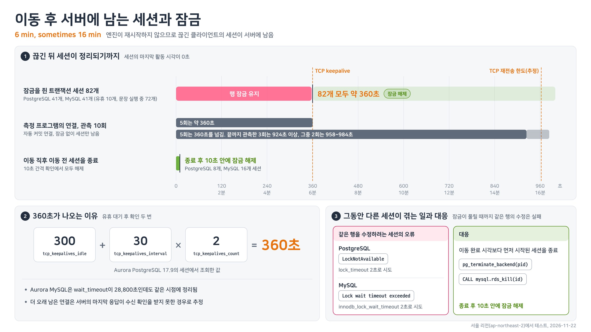
| 세션 | PostgreSQL | MySQL | 잠금이 풀린 시점 |
|---|---|---|---|
| 유휴 트랜잭션 | 5개 | 5개 | 마지막 활동 후 약 360초 |
| 문장을 실행 중이던 트랜잭션 | 36개 | 36개 | 마지막 활동 후 약 360초 |
| 이동 직후에 종료한 트랜잭션 세션 | 8개 | 16개 | 종료 후 10초 안 |
표 8. 이동 전에 행 잠금을 쥐고 있던 세션과 잠금이 풀린 시점. 잠금 확인 간격은 10초
아래는 이동이 완료되고 약 2분 뒤 PostgreSQL의 세션 목록입니다. 트랜잭션 세션 8개와 측정 프로그램의 연결 2개가 이동 전 상태 그대로 남아 있습니다.
SELECT pid, application_name, state,
round(extract(epoch FROM now() - state_change)) AS idle_sec, left(query, 40) AS query
FROM pg_stat_activity
WHERE backend_type = 'client backend' AND pid <> pg_backend_pid();
-- pid | application_name | state | idle_sec | query
-- 4533 | holders-pg-10-ghost-b2a | idle in transaction | 179 | UPDATE lock_t SET v = v + 1, note = 'pg-1
-- 4536 | holders-pg-10-ghost-b2a | idle in transaction | 138 | UPDATE lock_t SET v = v + 1 WHERE id = 6
-- 4551 | | idle | 138 | SELECT host(inet_server_addr()), aurora_
-- 4553 | | idle | 138 | INSERT INTO probe_w (run, seq, cts) VALU
-- (이동 전 세션 10개 가운데 4개만 표시)
-- 다른 세션에서 같은 행을 수정
SET lock_timeout = '2s';
UPDATE lock_t SET note = 'watch' WHERE id = 1;
-- ERROR: canceling statement due to lock timeout잠금을 쥔 세션 82개는 엔진과 종류에 관계없이 모두 약 360초에 정리됐습니다. 그 6분 동안 다른 세션이 같은 행을 수정하려 하면 실패했습니다. PostgreSQL에서는 lock_timeout 2초 조건에서 LockNotAvailable, MySQL에서는 Lock wait timeout exceeded가 반환됐습니다. 이동이 완료됐고 새 연결도 정상인데 특정 행에서만 대기가 걸리는 증상입니다.
360초는 서버의 TCP keepalive 설정과 일치합니다. Aurora PostgreSQL 17.9 세션에서 조회한 값은 tcp_keepalives_idle 300초, tcp_keepalives_interval 30초, tcp_keepalives_count 2회입니다. 합하면 360초입니다. Aurora MySQL은 wait_timeout이 28,800초인데도 같은 시점에 세션이 정리됐습니다.
잠금 없이 세션만 더 오래 남은 경우도 있었습니다. 측정 프로그램이 자동 커밋으로 질의를 반복하던 연결의 세션은 관측한 10회 가운데 5회에서 하나씩 360초를 넘겨 남았습니다. 끝까지 지켜본 3회에서는 세션이 924초, 958초, 969초 시점까지 보였습니다. 클라이언트 쪽의 963초와 같은 범위이므로 서버가 보낸 마지막 응답의 수신 확인을 받지 못한 연결이 TCP 재전송 한도까지 남은 것으로 추정합니다. 이런 세션은 잠금을 쥐지 않지만 연결 수 한도는 차지합니다.
테스트에서 확인한 대응은 이동이 완료된 직후에 이동 전 세션을 종료하는 것입니다. 이동 전에 맺은 연결은 모두 끊겼으므로 완료 시각보다 먼저 시작된 세션은 종료해도 됩니다. PostgreSQL에서는 아래 문장 하나로 이동 전 세션 11개(잠금을 쥔 8개 포함)가 종료됐고 10초 안에 행 8개의 잠금이 모두 풀렸습니다.
-- Aurora PostgreSQL: 이동 완료 이벤트 시각보다 먼저 시작된 세션을 종료
SELECT pid, usename, state, pg_terminate_backend(pid) AS terminated
FROM pg_stat_activity
WHERE backend_type = 'client backend'
AND pid <> pg_backend_pid()
AND usename <> 'rdsadmin'
AND backend_start < timestamptz '2026-11-22T05:20:24Z';
-- pid | usename | state | terminated
-- 1473 | labadmin | idle in transaction | t
-- 1474 | labadmin | idle in transaction | t
-- ... (모두 11행, 이후 같은 조건의 세션 수는 0)MySQL에서는 유휴 시간이 이동 완료 후 지난 시간보다 긴 세션을 조회하고 mysql.rds_kill로 종료했습니다. 완료 31초 뒤에 조회된 10개를 종료하자 다음 확인에서 행 8개의 잠금이 모두 풀려 있었습니다.
-- Aurora MySQL: TIME(마지막 명령 후 지난 초)이 이동 완료 후 지난 시간보다 큰 세션을 조회
SELECT ID, USER, HOST, COMMAND, TIME
FROM information_schema.PROCESSLIST
WHERE USER NOT IN ('rdsadmin', 'system user', 'event_scheduler')
AND ID <> CONNECTION_ID()
AND TIME > 31;
-- 조회된 ID마다 실행
CALL mysql.rds_kill(3191);08
사전 조건을 어긴 요청 다섯 가지는 모두 API 호출 시점에 거부됐습니다. 거부된 요청은 클러스터에 영향을 주지 않았고 측정 중이던 연결은 한 번도 실패하지 않았습니다.
| 조건 | 오류 코드 | 메시지 요지 |
|---|---|---|
| 인스턴스가 있는 가용 영역의 서브넷이 없는 서브넷 그룹 | InvalidVPCNetworkStateFault | 해당 가용 영역에 사용할 수 있는 IP가 있는 서브넷이 없음 |
| 대상 VPC가 아닌 보안 그룹 | InvalidParameterCombination | DB 인스턴스와 보안 그룹의 VPC가 다름 |
| RDS Proxy 대상으로 등록된 클러스터 | InvalidDBClusterStateFault | 프록시 대상 등록을 먼저 해제할 것 |
--no-enable-vpc-networking과 서브넷 그룹을 함께 지정 | InvalidParameterCombination | VPC 네트워킹을 비활성화하면 접속 경로가 없어짐 |
| 이동 중이거나 예약된 상태에서 보낸 다른 이동 요청 | InvalidDBClusterStateFault | 이미 대기 중인 변경이 있음 |
표 9. 호출 시점에 거부된 요청 다섯 가지. 현재와 같은 서브넷 그룹을 지정한 요청은 성공으로 반환되지만 이동도 이벤트도 일어나지 않음
거부된 요청 가운데 두 가지의 명령과 오류 원문입니다.
# 인스턴스가 있는 가용 영역(2a)의 서브넷이 없는 서브넷 그룹
aws rds modify-db-cluster --db-cluster-identifier avm-lab-my \
--db-subnet-group-name avm-lab-sng-b-no-az1 \
--vpc-security-group-ids sg-0bbbbbbbbbbbbbbbb --apply-immediately
# An error occurred (InvalidVPCNetworkStateFault) when calling the ModifyDBCluster operation: You can't enable VPC networking. Your database subnet group has no subnet with available IP addresses in Availability Zone ap-northeast-2a, where one of your cluster's database instances is located. Add a subnet, or free up IP addresses on an existing subnet, in that zone, then try again.
# RDS Proxy 대상으로 등록된 클러스터
aws rds modify-db-cluster --db-cluster-identifier avm-lab-sv2 \
--db-subnet-group-name avm-lab-sng-b \
--vpc-security-group-ids sg-0bbbbbbbbbbbbbbbb --apply-immediately
# An error occurred (InvalidDBClusterStateFault) when calling the ModifyDBCluster operation: Aurora can't disable VPC networking on a DB cluster with an associated RDS Proxy. Deregister the proxy target before disabling VPC networking.RDS Proxy의 대상 등록을 해제하자 클러스터가 바로 이동됐습니다. 문서에 따르면 Aurora Global Database, Blue/Green 배포, 제로 ETL 통합, Babelfish, 데이터베이스 활동 스트림도 이동 전에 해제해야 하는 기능입니다. 이 기능들은 이번에 테스트하지 않았습니다.
보안 그룹을 생략한 요청은 거부되지 않습니다. 이동은 정상으로 완료되지만 대상 VPC의 기본 보안 그룹이 연결됩니다. 기본 보안 그룹은 자기 자신에서 오는 트래픽만 허용하므로 클라이언트는 접속하지 못합니다. 테스트에서는 이동이 완료된 뒤에도 성공한 요청이 없었고 --vpc-security-group-ids로 보안 그룹을 다시 지정하자 3.4~4.0초 뒤에 접속됐습니다.
문서에 따르면 같은 VPC 안에서 서브넷 그룹만 바꿀 때도 보안 그룹을 생략하면 기본 보안 그룹으로 바뀝니다. 보안 그룹은 항상 지정하는 것을 권고합니다.
이동을 유지 관리 기간으로 미루려면 --no-apply-immediately를 사용합니다. 이때 PendingModifiedValues에는 VPCNetworkingEnabled: true만 보이고 대상 서브넷 그룹은 보이지 않습니다. 예약된 이동을 바로 적용할 때는 아래처럼 세 옵션만 지정합니다. 서브넷 그룹을 함께 지정하면 거부됩니다.
# 유지 관리 기간으로 예약
aws rds modify-db-cluster --db-cluster-identifier avm-lab-sv2 \
--db-subnet-group-name avm-lab-sng-a \
--vpc-security-group-ids sg-0aaaaaaaaaaaaaaaa --no-apply-immediately
# 예약된 상태 조회
aws rds describe-db-clusters --db-cluster-identifier avm-lab-sv2 \
--query "DBClusters[0].{Status:Status,DBSubnetGroup:DBSubnetGroup,Pending:PendingModifiedValues,Window:PreferredMaintenanceWindow}"
# {"Status": "available", "DBSubnetGroup": "avm-lab-sng-b", "Pending": {"VPCNetworkingEnabled": true}, "Window": "sun:14:20-sun:14:50"}
# 예약해 둔 이동을 바로 적용
aws rds modify-db-cluster --db-cluster-identifier avm-lab-sv2 \
--enable-vpc-networking --apply-immediately누가 언제 옮겼는지는 CloudTrail의 ModifyDBCluster 기록에서 확인합니다. 요청 파라미터에 dBSubnetGroupName이 남고 응답의 서브넷 그룹은 이동 전 값입니다.
첫 번째 이동의 CloudTrail 기록에서 관련 필드만 옮기면 아래와 같은 형태입니다.
{
"eventTime": "2026-11-22T03:50:12Z",
"eventSource": "rds.amazonaws.com",
"eventName": "ModifyDBCluster",
"requestParameters": {
"dBClusterIdentifier": "avm-lab-pg",
"applyImmediately": true,
"vpcSecurityGroupIds": ["sg-0bbbbbbbbbbbbbbbb"],
"dBSubnetGroupName": "avm-lab-sng-b"
},
"responseElements": {
"dBSubnetGroup": "avm-lab-sng-a",
"status": "available",
"pendingModifiedValues": {"vPCNetworkingEnabled": true}
}
}09
발표문과 사용 설명서가 든 예에 테스트에서 확인한 근거를 붙이면 이 기능이 맞는 경우는 네 가지로 나뉩니다.
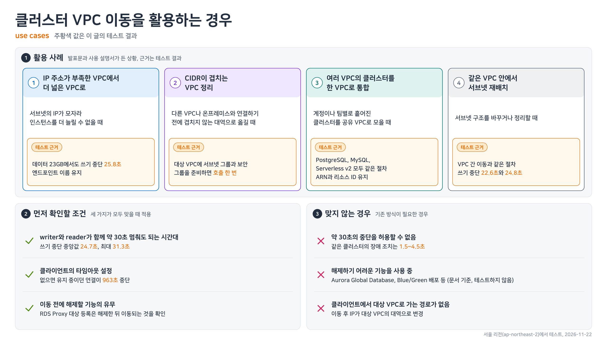
| 사례 | 상황 | 테스트에서 확인한 근거 |
|---|---|---|
| IP 주소가 부족한 VPC에서 더 넓은 VPC로 | 서브넷의 IP가 모자라 인스턴스를 늘릴 수 없을 때 | 데이터 23GB에서도 쓰기 중단 25.8초. 엔드포인트 이름 유지 |
| CIDR이 겹치는 VPC 정리 | 다른 VPC나 온프레미스와 연결하기 전에 겹치지 않는 대역으로 옮길 때 | 대상 VPC에 서브넷 그룹과 보안 그룹을 준비하면 호출 한 번 |
| 여러 VPC의 클러스터를 한 VPC로 통합 | 계정이나 팀별로 흩어진 클러스터를 공유 VPC로 모을 때 | PostgreSQL, MySQL, Serverless v2 모두 같은 절차. ARN과 리소스 ID 유지 |
| 같은 VPC 안에서 서브넷 재배치 | 서브넷 구조를 바꾸거나 정리할 때 | 같은 절차. 쓰기 중단 22.6초와 24.8초 |
표 10. 활용 사례와 테스트에서 확인한 근거. 다른 계정이 공유한 VPC와 온프레미스 경로는 테스트하지 않음
네 경우 모두 애플리케이션의 접속 문자열을 수정하지 않는다는 점이 기존 방식과 다릅니다. ARN과 리소스 ID도 그대로이므로 이를 참조하는 설정도 수정하지 않습니다. 클라이언트가 대상 VPC에 도달하는 경로와 보안 그룹 규칙은 이동 전에 준비해야 합니다.
이 기능은 세 조건이 모두 맞을 때 적용하기 좋습니다. writer와 reader가 함께 30초 안팎 멈춰도 되는 시간대가 있고 클라이언트에 타임아웃이 설정돼 있으며 이동 전에 해제해야 하는 기능을 잠시 내려놓을 수 있어야 합니다.
약 30초의 중단을 받아들일 수 없는 서비스에는 맞지 않습니다. 같은 클러스터의 장애 조치는 1.5초에서 4.5초였으므로 장애 조치 수준의 중단만 허용하는 서비스라면 다른 방법을 검토해야 합니다. Aurora Global Database처럼 해제하기 어려운 기능을 사용 중이라면 새 클러스터를 만들어 전환하는 기존 방식이 여전히 필요합니다.
10
이 글의 수치는 한 계정에서 하루 동안 얻은 값입니다. 아래 조건은 테스트하지 않았으므로 적용 전에 같은 방법으로 확인하는 것을 권고합니다.
incompatible-network 상태(RDS-EVENT-0676)는 재현하지 못했습니다. 이번에 본 실패는 모두 호출 시점의 거부였습니다.11
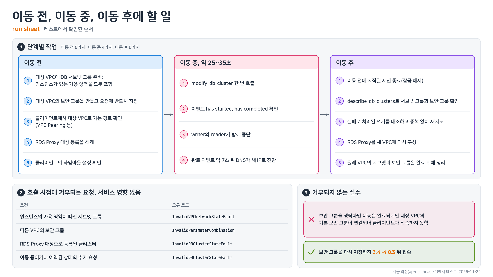
| 시점 | 할 일 | 근거가 된 결과 |
|---|---|---|
| 이동 전 | 대상 VPC의 DB 서브넷 그룹에 인스턴스가 있는 가용 영역을 모두 포함 | 빠지면 InvalidVPCNetworkStateFault로 거부 |
| 이동 전 | 대상 VPC의 보안 그룹을 만들고 요청에 지정 | 생략하면 기본 보안 그룹이 연결되어 접속 불가 |
| 이동 전 | 클라이언트에서 대상 VPC로 가는 경로와 보안 그룹 규칙 확인 | 테스트에서는 VPC Peering 경유 |
| 이동 전 | RDS Proxy 대상 등록 해제 | 등록된 상태에서는 InvalidDBClusterStateFault로 거부 |
| 이동 전 | 클라이언트의 타임아웃 설정 확인 | 없으면 유지 중이던 연결이 963초 멈춤 |
| 이동 중 | modify-db-cluster 호출 후 시작과 완료 이벤트 확인 | 호출 후 8.0초와 27.8초 |
| 이동 중 | writer와 reader의 동시 중단을 전제로 공지 | 쓰기 중단 24.7초, 최대 31.3초 |
| 이동 후 | 완료 시각보다 먼저 시작된 세션 종료 | 두면 잠금이 약 360초 남음 |
| 이동 후 | describe-db-clusters로 서브넷 그룹과 보안 그룹 확인, 접속 검사에는 재시도 적용 | 완료 이벤트 후 DNS 전환까지 7.0초 |
| 이동 후 | 실패로 처리된 쓰기를 대조하고 중복 없이 재시도 | 실패 32건 가운데 2건은 커밋됨 |
| 이동 후 | 원래 VPC의 서브넷과 보안 그룹은 완료를 확인한 뒤에 정리 | 문서: 실패하면 원래 VPC로 되돌리는 데 필요 |
표 11. 이동 전후에 할 일과 근거. db.r7g.large와 Serverless v2, 클러스터당 인스턴스 1~2개 조건의 결과
중단 시간은 인스턴스 수와 부하에 따라 달라질 가능성이 있습니다. 운영 클러스터에 적용하기 전에 같은 구성의 복제본으로 먼저 측정하는 것을 권고합니다.
Having to move an Aurora cluster to another VPC is not rare. The subnets run out of IP addresses and a VPC with a wider range is needed, the CIDR overlaps with a network you want to connect, clusters spread over several VPCs are gathered into a shared VPC, or the security and compliance requirements change. The announcement and the Aurora User Guide give the same examples.
The DB subnet group decides which VPC a cluster belongs to. Until now it could not be changed after the cluster was created. So changing the VPC meant creating a new cluster in the destination VPC and moving the data.
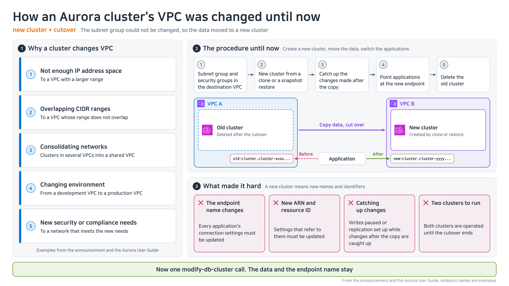
The procedure started with a subnet group and security groups in the destination VPC. Next you created a new cluster by cloning or restoring a snapshot and brought it in line with the changes made after that point in time. Then you changed the connection strings of the applications to the new endpoint and deleted the old cluster.
This was hard because the new cluster is a different resource from the old one. The endpoint name changes, so the settings of every application that connects have to change. The ARN and the resource ID are new as well, so settings that refer to them change too. A clone and a snapshot are copies as of one point in time, so catching up with later changes means stopping writes or setting up replication. Until the cutover is done, two clusters run side by side.
A clone can be created in a different VPC, but according to the documentation the subnets of the two VPCs must map to the same Availability Zones. The announcement of November 19, 2026 turned this work into one API call. This post is a record of what happens during that one call, tested in the Seoul Region.
01
I tested the feature Amazon Aurora announced on November 19, 2026 for moving a cluster to a different VPC, in the Seoul Region (ap-northeast-2). I moved Aurora PostgreSQL, Aurora MySQL and Aurora PostgreSQL Serverless v2 clusters between two VPCs 38 times. Writes on an open connection stopped for a median of 24.7 s over 30 cross-VPC moves.
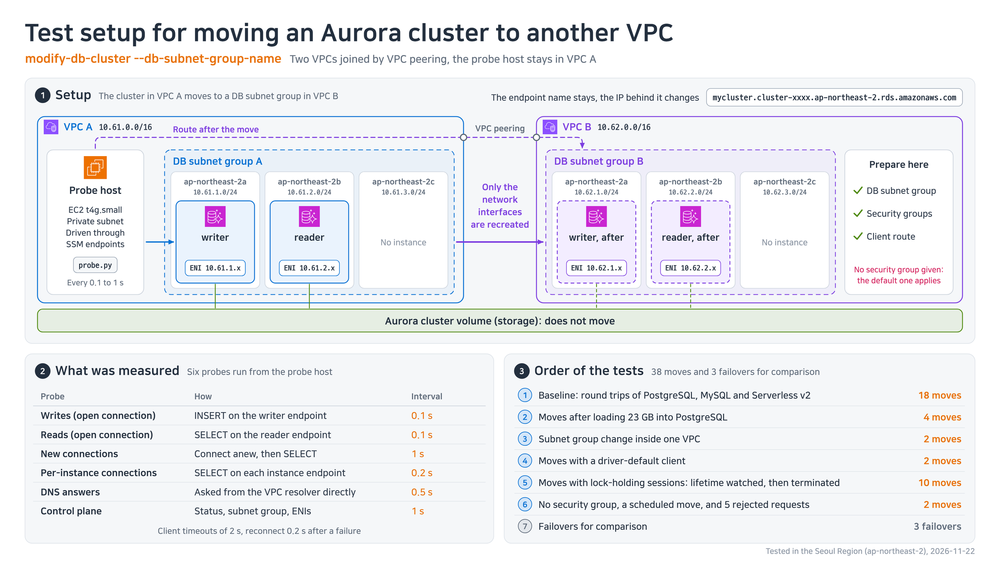
Before the test I expected that an application would only need to reconnect once, because the endpoint name does not change. That held only when the client had timeouts set. A client without timeouts opened new connections after 25 s, but its open connection waited 963 s for an answer. On the server, the sessions of the cut clients stayed for about six minutes and kept their row locks.
| What to check | What the announcement and the docs say | Test result |
|---|---|---|
| Data and endpoint | Data stays in place and the cluster endpoint stays the same | Endpoint names, ARNs and resource IDs stayed. The time did not change after loading 23 GB |
| Interruption | Connectivity is interrupted briefly during the move. No duration is given | Writes interrupted for a median of 24.7 s, minimum 18.1 s, maximum 31.3 s (30 moves) |
| Supported engines | Aurora PostgreSQL and Aurora MySQL | All 38 moves succeeded on both engines and on Aurora PostgreSQL Serverless v2 |
| What the application sees | IP addresses change after the move, so connect by DNS name | About 25 s with 2 s timeouts. With driver defaults an open connection stalled for 963 s |
| State of the server after the move | Not described | No engine restart. Sessions and locks of the cut clients stayed for about 360 s |
| Requests that break a prerequisite | The request fails | All five were rejected at call time, with no service impact |
Table 1. What I set out to check and what the test showed. Seoul Region, November 22, 2026
02
With this launch the ModifyDBCluster API accepts a DBSubnetGroupName parameter. When you name a DB subnet group that you created in the destination VPC, Aurora moves every instance of the cluster to it. In the AWS CLI it is the --db-subnet-group-name option of modify-db-cluster. The announcement says the feature is available in the Regions that offer the express configuration of Aurora PostgreSQL, and the Seoul Region is one of them.
aws rds modify-db-cluster \
--db-cluster-identifier mycluster \
--db-subnet-group-name my-subnet-group-vpc-b \
--vpc-security-group-ids sg-0123456789abcdef0 \
--apply-immediately| Item | Moving to a new cluster | Moving the cluster to another VPC |
|---|---|---|
| Procedure | Create a new cluster in the destination VPC by cloning or restoring, bring the data in line, then cut over | One modify-db-cluster call |
| Data | Copied or restored into the new cluster | Not moved |
| Endpoint | A new name. Application settings must change | The name stays. Only the IP behind it changes |
| ARN and resource ID | New | Kept |
| Interruption | Depends on how the cutover is done | About 25 s in this test |
Table 2. The earlier way and the cluster VPC move. The interruption in the right column is the result of this test
The instance-level command still cannot do it. modify-db-instance with --db-subnet-group-name returns an error. The message is You can't modify the subnet group of the DB instance because it is a member of a cluster. A change to another subnet group inside the same VPC goes through the same cluster-level procedure.
A shop moving to a new building is a helpful picture. The cluster endpoint name is the shop's main phone number and the instance IP is the street address. After the move the phone number is the same and only the address is new. The goods were in a separate warehouse, the cluster volume, from the start, so there is nothing to carry. The staff, the DB engine process, do not stop working and only change desks.
A customer who was on the phone at the moment of the move is not told that the line went dead. The customer has to hang up and call again, and that is the client timeout. The staff do not know that the call dropped and keep holding that customer's order form for a while. Those are the sessions and locks left on the server.
The picture also differs from the real thing in one way. A shop can keep one counter open while it moves, but in Aurora the writer and the reader are cut at the same moment.
03
The test ran in one account in the Seoul Region on November 22, 2026. To leave existing VPCs untouched I created two new VPCs for the test and joined them with VPC peering. There is no internet gateway and no NAT gateway.
| Item | Configuration |
|---|---|
| VPCs | VPC A 10.61.0.0/16, VPC B 10.62.0.0/16. Three DB subnets each (ap-northeast-2a, 2b, 2c) |
| Aurora PostgreSQL | 17.9, db.r7g.large, writer (2a) and reader (2b) |
| Aurora MySQL | 3.10.3 (MySQL 8.0 compatible), db.r7g.large, writer (2a) and reader (2c) |
| Aurora PostgreSQL Serverless v2 | 17.9, 0.5 to 4 ACUs, one instance (2c) |
| Probe host | t4g.small in a private subnet of VPC A, Amazon Linux 2023, Python 3.9, psycopg2 2.9.12, PyMySQL 1.2.4 |
| Calling tool | AWS CLI 2.42.1 |
Table 3. The test environment. Every cluster had storage encryption on and public access off
I created the DB subnet group and the security group in the destination VPC beforehand. The subnet group needs a subnet in every Availability Zone that holds an instance of the cluster. These are the commands used, with the IDs masked.
# Availability Zones that hold the cluster's instances
aws rds describe-db-instances --filters Name=db-cluster-id,Values=avm-lab-pg \
--query "DBInstances[].[DBInstanceIdentifier,AvailabilityZone]" --output text
# avm-lab-pg-1 ap-northeast-2a
# avm-lab-pg-2 ap-northeast-2b
# DB subnet group in the destination VPC (VPC B): subnets in 2a, 2b and 2c
aws rds create-db-subnet-group --db-subnet-group-name avm-lab-sng-b \
--db-subnet-group-description "VPC B, three AZs" \
--subnet-ids subnet-0b1b1b1b1b1b1b1b1 subnet-0b2b2b2b2b2b2b2b2 subnet-0b3b3b3b3b3b3b3b3
# Security group in the destination VPC: allow the DB port from the VPC A range where the client is
aws ec2 create-security-group --group-name avm-lab-db-sg-b --vpc-id vpc-0bbbbbbbbbbbbbbbb \
--description "avm-lab DB access in VPC B"
aws ec2 authorize-security-group-ingress --group-id sg-0bbbbbbbbbbbbbbbb \
--protocol tcp --port 5432 --cidr 10.61.0.0/16The probe program ran on an EC2 instance that stayed in VPC A. After a cluster moved to VPC B the probe reached it through the VPC peering connection. The program records the six things in Figure 2 at the same time.
INSERT of a row with a sequence number every 0.1 sSELECT every 0.1 sI ran 38 moves in total. The interruption statistics use the 30 cross-VPC moves measured with the client that has 2 s timeouts. The rest are 2 moves inside one VPC, 2 with a driver-default client, 1 without security groups, and 3 more that looked again at the sessions left on the server.
An interruption is the time from the last success to the next success on each connection. In the standard runs the connect, read and write timeouts are 2 s and the probe reconnects 0.2 s after a failure. So the resolution of the interruption is about 2.2 s, and the values gather near 22.5 s, 24.7 s and 26.9 s.
Every write carried a sequence number, so after each run I read all the numbers in the table and compared them with the numbers that had been acknowledged. Whether the engine restarted was judged from PostgreSQL's pg_postmaster_start_time() and MySQL's Uptime carrying on across the move.
04
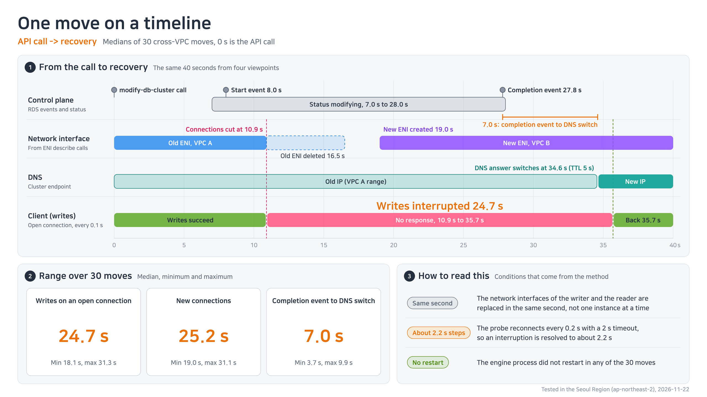
The start event is logged 8.0 s after the API call and connections are cut at 10.9 s. The old network interface is deleted at 16.5 s and the new one in the destination VPC appears at 19.0 s. The completion event comes at 27.8 s, the DNS answer switches to the new IP at 34.6 s, and writes succeed again at 35.7 s. According to the event documentation the start event is RDS-EVENT-0673 and the completion event is RDS-EVENT-0674.
| Point in time | Median | Minimum | Maximum |
|---|---|---|---|
| Start event | 8.0 | 3.1 | 13.1 |
| Connections cut (last successful write) | 10.9 | 5.5 | 17.3 |
| Old network interface deleted | 16.5 | 11.0 | 24.0 |
| New network interface created | 19.0 | 13.0 | 25.0 |
| Completion event | 27.8 | 22.6 | 35.8 |
| DNS answer switches to the new IP | 34.6 | 27.3 | 42.4 |
| Writes recover | 35.7 | 28.4 | 42.0 |
Table 4. Each point in seconds after the API call. 30 cross-VPC moves. The event messages are The VPC configuration modification for DB cluster ... has started. and ... has completed.
These are the commands and responses of the first move. The responses show only the relevant fields and the security group IDs are masked. The response to the call still shows the subnet group from before the move, and only VPCNetworkingEnabled appears as a pending change.
# State before the move
aws rds describe-db-clusters --db-cluster-identifier avm-lab-pg \
--query "DBClusters[0].[Status,DBSubnetGroup,VpcSecurityGroups[].VpcSecurityGroupId]"
# ["available", "avm-lab-sng-a", ["sg-0aaaaaaaaaaaaaaaa"]]
# The move call (03:50:11 UTC)
aws rds modify-db-cluster --db-cluster-identifier avm-lab-pg \
--db-subnet-group-name avm-lab-sng-b \
--vpc-security-group-ids sg-0bbbbbbbbbbbbbbbb --apply-immediately \
--query "DBCluster.[Status,DBSubnetGroup,PendingModifiedValues]"
# ["available", "avm-lab-sng-a", {"VPCNetworkingEnabled": true}]
# Events
aws rds describe-events --source-type db-cluster --source-identifier avm-lab-pg --duration 10 \
--query "Events[].[Date,Message]" --output text
# 2026-11-22T03:50:18.483000+00:00 The VPC configuration modification for DB cluster avm-lab-pg has started.
# 2026-11-22T03:50:35.026000+00:00 The VPC configuration modification for DB cluster avm-lab-pg has completed.
# State after the move
aws rds describe-db-clusters --db-cluster-identifier avm-lab-pg \
--query "DBClusters[0].[Status,DBSubnetGroup,VpcSecurityGroups[].VpcSecurityGroupId]"
# ["available", "avm-lab-sng-b", ["sg-0bbbbbbbbbbbbbbbb"]]The probe recorded the same move as follows. Write 559 succeeds, write 560 fails on a timeout 2.5 s later, and the probe then tries to reconnect to the old IP. After the DNS answer changes, it carries on from write 561 on the new IP. The error texts are shortened.
# Write connection (times in UTC, ms is the duration)
03:50:19.466 {"ev": "q", "ok": true, "ms": 2.9, "ip": "10.61.1.143", "inst": "avm-lab-pg-1", "seq": 559}
03:50:19.566 {"ev": "q", "ok": false, "ms": 2491.0, "seq": 560, "err": "could not receive data from server: Connection timed out"}
03:50:22.057 {"ev": "connect", "ok": false, "ms": 2005.5, "ip": "10.61.1.143", "err": "connection to server at \"10.61.1.143\", port 5432 failed: timeout expired"}
... (the same failure 8 more times)
03:50:41.917 {"ev": "connect", "ok": false, "ms": 2003.9, "ip": "10.61.1.143", "err": "connection to server at \"10.61.1.143\", port 5432 failed: timeout expired"}
03:50:44.121 {"ev": "connect", "ok": true, "ms": 21.7, "ip": "10.62.1.133"}
03:50:44.221 {"ev": "q", "ok": true, "ms": 5.2, "ip": "10.62.1.133", "inst": "avm-lab-pg-1", "seq": 561}
# A record and TTL of the cluster endpoint (only where the value changed)
03:49:23.567 ['10.61.1.143'] ttl 5
03:50:42.076 ['10.62.1.133'] ttl 4
03:50:42.587 ['10.61.1.143'] ttl 2
03:50:44.117 ['10.62.1.133'] ttl 4The completion event is not the moment of recovery. After the completion event it took a median of 7.0 s (minimum 3.7 s, maximum 9.9 s) for the DNS answer to change. During that time clients keep trying the old IP. The TTL of the endpoint record was 5 s. When you automate a move, I recommend a retry on the connection check that follows the completion event.
The writer and the reader are cut together. In the control-plane log the network interfaces of both instances were detached in the same second and created again in the same second. An application that spreads reads over the reader endpoint also loses reads and writes together during the move.
At the moment of the cut the client gets no error. An open connection failed only after its 2 s timeout. The error was Connection timed out on PostgreSQL and Lost connection to MySQL server during query on MySQL. The server did not close the connection; the answers simply stopped coming.
Only in the first of the 30 moves did the DNS answer go back and forth between the old IP and the new IP for about 4 s, and one new connection in that window went to the old IP and failed. In the other runs the answer switched once.
05
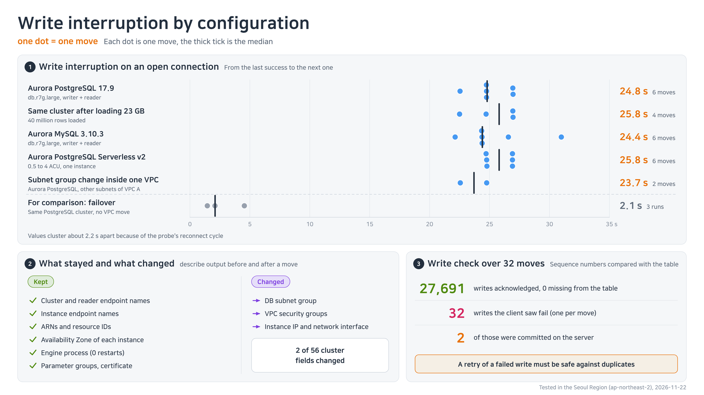
| Configuration | Moves | Median | Minimum | Maximum |
|---|---|---|---|---|
| Aurora PostgreSQL 17.9, 0.2 GB of data | 6 | 24.8 | 22.5 | 27.0 |
| Aurora PostgreSQL 17.9, 23 GB of data | 4 | 25.8 | 22.5 | 27.0 |
| Aurora MySQL 3.10.3 | 6 | 24.4 | 22.1 | 31.0 |
| Aurora PostgreSQL Serverless v2 | 6 | 25.8 | 24.7 | 26.9 |
| Subnet group change inside one VPC | 2 | 23.7 | 22.6 | 24.8 |
| Failover for comparison (the same PostgreSQL cluster) | 3 | 2.1 | 1.5 | 4.5 |
Table 5. Write interruption by configuration, in seconds. Open connection, 2 s timeouts. The 30 cross-VPC moves are the 22 above plus 8 run during the lock experiments
The differences between configurations are within the measurement resolution of about 2.2 s. After loading 40 million rows (23 GB) into the PostgreSQL cluster the median was still 25.8 s. What moves is the network interface, not the data.
A subnet group change inside one VPC also took 22.6 s and 24.8 s. If you change the subnet group only to tidy up subnets, plan for the same interruption as a move to another VPC.
On the same PostgreSQL cluster I ran three failovers and measured them the same way: writes were interrupted for 1.5 s, 2.1 s and 4.5 s. The interruption of a VPC move is more than five times that of a failover. An application whose retry count or wait time was sized for a failover may not ride through a VPC move.
| Outcome | Attributes |
|---|---|
| Kept | Cluster, reader and instance endpoint names. ARNs and resource IDs of the cluster and instances. Availability Zone and creation time of each instance. Parameter groups and certificate. The engine process |
| Changed | DB subnet group, VPC security groups, the private IP and network interface of each instance |
Table 6. A comparison of describe-db-clusters and describe-db-instances before and after a move. Of 56 cluster attributes only two changed, the subnet group and the security group
The write check found nothing missing. Over 32 moves all 27,691 acknowledged writes were in the table. The client counted 32 writes as failed, one per move, and 2 of those had been committed on the server. A write that got no answer may have succeeded, so a retry has to be safe against duplicates.
06
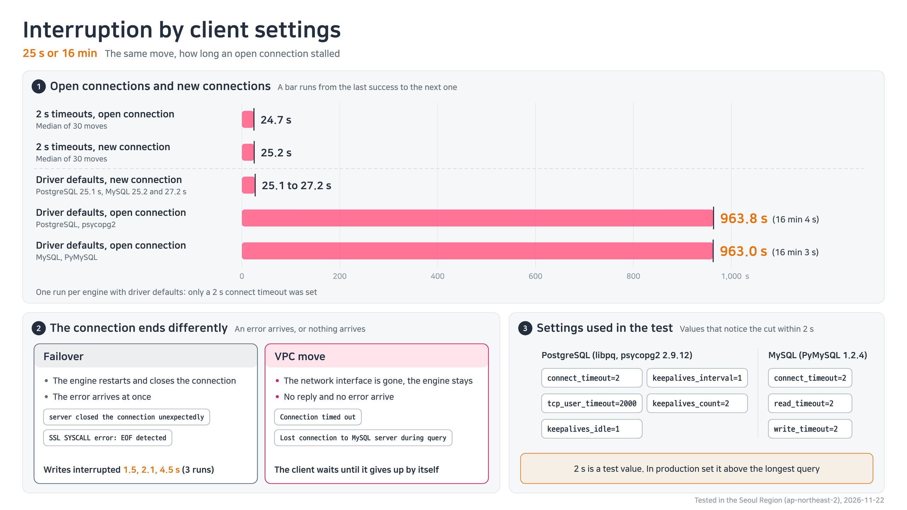
I repeated the same move with a client that has no timeouts. Only the connect timeout was 2 s and everything else was left at the driver defaults.
| Client | Open connection | New connections | Error on the open connection |
|---|---|---|---|
| 2 s timeouts (median of 30) | 24.7 s | 25.2 s | Connection timed out after 2 s |
| Driver defaults, PostgreSQL (psycopg2) | 963.8 s | 25.1 s | could not receive data from server: Connection timed out |
| Driver defaults, MySQL (PyMySQL) | 963.0 s | 25.2 s | Lost connection to MySQL server during query ([Errno 110] Connection timed out) |
Table 7. Interruption by client settings. The driver-default runs are one per engine, and the PostgreSQL one was measured on the Serverless v2 cluster
This is the record of the PostgreSQL write connection in the driver-default run. Write 355 did not come back for 963.5 s, and the interruption including the reconnect was 963.7 s. The instance endpoint connection of the same run stalled for 963.8 s.
04:16:36.184 {"ev": "q", "ok": true, "ms": 3.6, "ip": "10.61.3.54", "inst": "avm-lab-sv2-1", "seq": 354}
04:16:36.284 {"ev": "q", "ok": false, "ms": 963532.7, "seq": 355, "err": "could not receive data from server: Connection timed out"}
04:32:39.817 {"ev": "connect", "ok": true, "ms": 29.7, "ip": "10.62.3.201"}
04:32:39.917 {"ev": "q", "ok": true, "ms": 9.8, "ip": "10.62.3.201", "inst": "avm-lab-sv2-1", "seq": 356}New connections were made as soon as DNS switched to the new IP. The open connection had sent a query and did not come back for 16 minutes. All that time the cluster was healthy and other connections were being served.
The cause is the way the connection ends. In a failover the engine restarts and closes its connections, so the client gets an error such as server closed the connection unexpectedly at once. In a VPC move the engine stays up and only the network interface goes away. The query the client sent gets neither an answer nor an error, and the client waits until the operating system gives up retransmitting.
963 s fits the TCP retransmission limit of Linux. According to the kernel documentation the default tcp_retries2 of 15 corresponds to a wait of 924.6 s or more. The probe host is an Amazon Linux 2023 instance that leaves this value unchanged. That the retransmission limit is the cause is inferred from the observed time.
# PostgreSQL (psycopg2, libpq parameters). 2 s is a test value
psycopg2.connect(
host=endpoint, dbname="labdb", user=user, password=password,
connect_timeout=2,
tcp_user_timeout=2000, # milliseconds. Close the connection after 2 s without an acknowledgement
keepalives=1, keepalives_idle=1, keepalives_interval=1, keepalives_count=2,
)
# MySQL (PyMySQL)
pymysql.connect(
host=endpoint, database="labdb", user=user, password=password,
connect_timeout=2, read_timeout=2, write_timeout=2,
)These are the settings used in the test. I chose 2 s to measure the interruption finely. In production the value has to be longer than the longest query, or normal queries will be cut. The PostgreSQL options are libpq connection parameters. Option names differ by driver, and this post tested only psycopg2 and PyMySQL.
07
The fact that the engine does not restart has a price. The server does not learn right away that a client is gone, so the session of a cut connection stays on the server. A session that was cut with a transaction open also keeps its row locks.
To check this I created sessions that run an UPDATE on one row inside a transaction and do not commit, and then moved the cluster. There were two kinds of session. One runs a single UPDATE and then sits idle in the transaction. The other repeats the UPDATE every 0.05 s inside the same transaction. After the move a new connection tried to lock the same rows every 10 s.
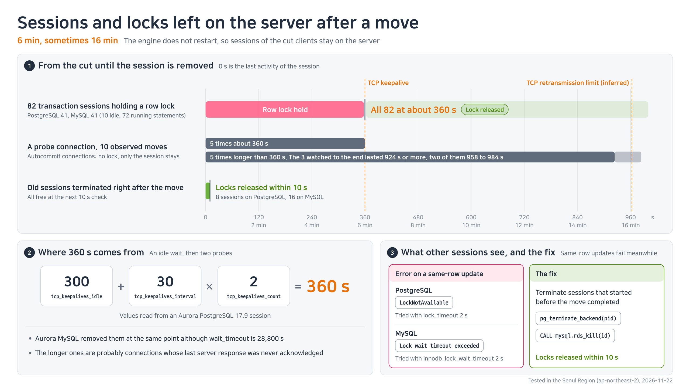
| Session | PostgreSQL | MySQL | When the lock was released |
|---|---|---|---|
| Idle in a transaction | 5 | 5 | About 360 s after the last activity |
| Running statements in a transaction | 36 | 36 | About 360 s after the last activity |
| Transaction sessions terminated right after the move | 8 | 16 | Within 10 s of the termination |
Table 8. Sessions that held a row lock before the move and when the lock was released. The lock was checked every 10 s
This is the session list of PostgreSQL about two minutes after the move completed. The eight transaction sessions and the two probe connections are still there, in the state they had before the move.
SELECT pid, application_name, state,
round(extract(epoch FROM now() - state_change)) AS idle_sec, left(query, 40) AS query
FROM pg_stat_activity
WHERE backend_type = 'client backend' AND pid <> pg_backend_pid();
-- pid | application_name | state | idle_sec | query
-- 4533 | holders-pg-10-ghost-b2a | idle in transaction | 179 | UPDATE lock_t SET v = v + 1, note = 'pg-1
-- 4536 | holders-pg-10-ghost-b2a | idle in transaction | 138 | UPDATE lock_t SET v = v + 1 WHERE id = 6
-- 4551 | | idle | 138 | SELECT host(inet_server_addr()), aurora_
-- 4553 | | idle | 138 | INSERT INTO probe_w (run, seq, cts) VALU
-- (4 of the 10 sessions from before the move)
-- another session modifies the same row
SET lock_timeout = '2s';
UPDATE lock_t SET note = 'watch' WHERE id = 1;
-- ERROR: canceling statement due to lock timeoutAll 82 lock-holding sessions were removed at about 360 s, whatever the engine or the kind of session. During those six minutes another session that tried to modify the same row failed. PostgreSQL returned LockNotAvailable with lock_timeout at 2 s, and MySQL returned Lock wait timeout exceeded. The symptom is that the move has completed and new connections work, yet a statement waits on particular rows.
360 s matches the TCP keepalive settings of the server. An Aurora PostgreSQL 17.9 session reports three values. tcp_keepalives_idle is 300 s, tcp_keepalives_interval is 30 s and tcp_keepalives_count is 2, which adds up to 360 s. Aurora MySQL removed its sessions at the same point although wait_timeout is 28,800 s.
Some sessions stayed longer, without a lock. The session of a probe connection that repeated autocommit queries outlived 360 s in 5 of the 10 moves I observed, one session each time. In the 3 I watched to the end, the session was still visible at 924 s, 958 s and 969 s. That is the same range as the 963 s on the client side, so I infer that a connection whose last server response was never acknowledged stays until the TCP retransmission limit. Such a session holds no lock, but it does count against the connection limit.
The surest fix is to terminate the sessions from before the move right after the move completes. Every connection made before the move has been cut, so a session that started before the completion time can be terminated. On PostgreSQL the single statement below terminated the 11 sessions from before the move (8 of them holding locks), and all eight row locks were released within 10 s.
-- Aurora PostgreSQL: terminate sessions that started before the completion event
SELECT pid, usename, state, pg_terminate_backend(pid) AS terminated
FROM pg_stat_activity
WHERE backend_type = 'client backend'
AND pid <> pg_backend_pid()
AND usename <> 'rdsadmin'
AND backend_start < timestamptz '2026-11-22T05:20:24Z';
-- pid | usename | state | terminated
-- 1473 | labadmin | idle in transaction | t
-- 1474 | labadmin | idle in transaction | t
-- ... (11 rows in all, then no session matched the same condition)On MySQL I listed the sessions that had been idle for longer than the time since the move completed and terminated them with mysql.rds_kill. Thirty-one seconds after completion the query returned 10 sessions, and at the next check after terminating them all eight row locks were free.
-- Aurora MySQL: list sessions whose TIME (seconds since the last command) exceeds the time since the move completed
SELECT ID, USER, HOST, COMMAND, TIME
FROM information_schema.PROCESSLIST
WHERE USER NOT IN ('rdsadmin', 'system user', 'event_scheduler')
AND ID <> CONNECTION_ID()
AND TIME > 31;
-- run for each ID returned
CALL mysql.rds_kill(3191);08
The five requests that broke a prerequisite were all rejected at the API call. A rejected request did not touch the cluster, and the connections being measured never failed.
| Condition | Error code | Gist of the message |
|---|---|---|
| A subnet group with no subnet in an Availability Zone that has an instance | InvalidVPCNetworkStateFault | No subnet with available IP addresses in that Availability Zone |
| A security group that is not in the destination VPC | InvalidParameterCombination | The DB instance and the security group are in different VPCs |
| A cluster registered as an RDS Proxy target | InvalidDBClusterStateFault | Deregister the proxy target first |
--no-enable-vpc-networking together with a subnet group | InvalidParameterCombination | Turning off VPC networking would leave no connectivity |
| Another move request while one is in progress or scheduled | InvalidDBClusterStateFault | A change is already pending |
Table 9. The five requests rejected at call time. A request that names the current subnet group returns success, but no move and no event follow
These are the commands and the error texts of two of the rejected requests.
# A subnet group with no subnet in an Availability Zone (2a) that holds an instance
aws rds modify-db-cluster --db-cluster-identifier avm-lab-my \
--db-subnet-group-name avm-lab-sng-b-no-az1 \
--vpc-security-group-ids sg-0bbbbbbbbbbbbbbbb --apply-immediately
# An error occurred (InvalidVPCNetworkStateFault) when calling the ModifyDBCluster operation: You can't enable VPC networking. Your database subnet group has no subnet with available IP addresses in Availability Zone ap-northeast-2a, where one of your cluster's database instances is located. Add a subnet, or free up IP addresses on an existing subnet, in that zone, then try again.
# A cluster registered as an RDS Proxy target
aws rds modify-db-cluster --db-cluster-identifier avm-lab-sv2 \
--db-subnet-group-name avm-lab-sng-b \
--vpc-security-group-ids sg-0bbbbbbbbbbbbbbbb --apply-immediately
# An error occurred (InvalidDBClusterStateFault) when calling the ModifyDBCluster operation: Aurora can't disable VPC networking on a DB cluster with an associated RDS Proxy. Deregister the proxy target before disabling VPC networking.With RDS Proxy, the move went through as soon as the target was deregistered. The documentation also lists Aurora Global Database, blue/green deployments, zero-ETL integrations, Babelfish and database activity streams as features to remove before a move. I did not test those.
A request that leaves out the security groups is not rejected. The move completes normally, but the default security group of the destination VPC is attached. The default security group allows traffic only from itself, so clients cannot connect. In the test no request succeeded after the move completed, and clients connected 3.4 to 4.0 s after I set the security group again with --vpc-security-group-ids.
According to the documentation the default security group also replaces the current ones when you leave them out of a subnet group change inside one VPC. I recommend always naming the security groups.
To leave the move for the maintenance window, use --no-apply-immediately. PendingModifiedValues then shows only VPCNetworkingEnabled: true and not the destination subnet group. To apply a scheduled move right away, pass only the three options below. Adding the subnet group makes the request fail.
# Schedule the move for the maintenance window
aws rds modify-db-cluster --db-cluster-identifier avm-lab-sv2 \
--db-subnet-group-name avm-lab-sng-a \
--vpc-security-group-ids sg-0aaaaaaaaaaaaaaaa --no-apply-immediately
# Read the scheduled state
aws rds describe-db-clusters --db-cluster-identifier avm-lab-sv2 \
--query "DBClusters[0].{Status:Status,DBSubnetGroup:DBSubnetGroup,Pending:PendingModifiedValues,Window:PreferredMaintenanceWindow}"
# {"Status": "available", "DBSubnetGroup": "avm-lab-sng-b", "Pending": {"VPCNetworkingEnabled": true}, "Window": "sun:14:20-sun:14:50"}
# Apply the scheduled move right away
aws rds modify-db-cluster --db-cluster-identifier avm-lab-sv2 \
--enable-vpc-networking --apply-immediatelyWho moved a cluster and when is in the CloudTrail record of ModifyDBCluster. The request parameters carry dBSubnetGroupName, and the subnet group in the response is the one before the move.
The CloudTrail record of the first move looks like this when reduced to the relevant fields.
{
"eventTime": "2026-11-22T03:50:12Z",
"eventSource": "rds.amazonaws.com",
"eventName": "ModifyDBCluster",
"requestParameters": {
"dBClusterIdentifier": "avm-lab-pg",
"applyImmediately": true,
"vpcSecurityGroupIds": ["sg-0bbbbbbbbbbbbbbbb"],
"dBSubnetGroupName": "avm-lab-sng-b"
},
"responseElements": {
"dBSubnetGroup": "avm-lab-sng-a",
"status": "available",
"pendingModifiedValues": {"vPCNetworkingEnabled": true}
}
}09
Putting the evidence from the test next to the examples in the announcement and the User Guide gives four cases where the feature fits.
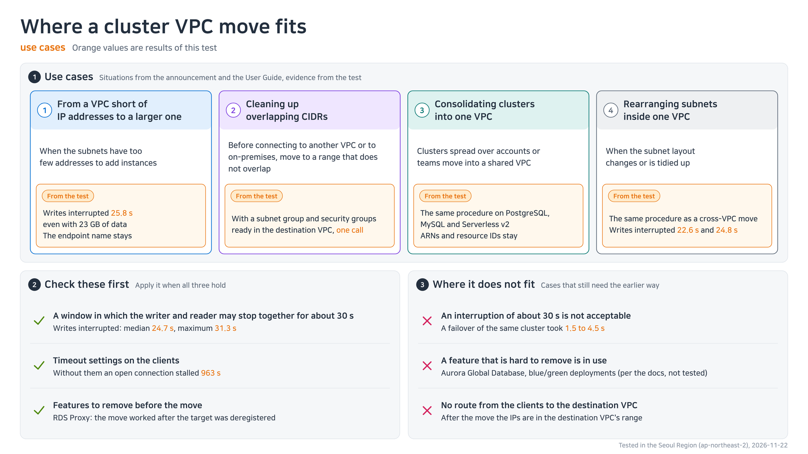
| Case | Situation | Evidence from the test |
|---|---|---|
| From a VPC short of IP addresses to a wider one | The subnets have too few IP addresses to add instances | Writes interrupted 25.8 s even with 23 GB of data. The endpoint name stays |
| Clearing an overlapping CIDR | Moving to a non-overlapping range before connecting another VPC or an on-premises network | One call once the subnet group and security groups exist in the destination VPC |
| Consolidating clusters from several VPCs into one | Gathering clusters spread over accounts or teams into a shared VPC | The same procedure on PostgreSQL, MySQL and Serverless v2. ARNs and resource IDs stay |
| Rearranging subnets inside one VPC | Changing or tidying up the subnet layout | The same procedure. Writes interrupted 22.6 s and 24.8 s |
Table 10. Use cases and the evidence from the test. A VPC shared by another account and an on-premises path were not tested
In all four cases the connection strings of the applications stay as they are, which is the difference from the earlier way. The ARNs and resource IDs stay too, so settings that refer to them need no change. The path from the clients to the destination VPC and the security group rules have to be ready before the move.
The feature fits when three conditions all hold. There is a window in which the writer and the reader may stop together for about 30 s, the clients have timeouts set, and the features that must be removed before a move can be set aside for a while.
It does not fit a service that cannot accept an interruption of about 30 s. A failover of the same cluster took 1.5 s to 4.5 s, so a service that tolerates only a failover-sized interruption needs another way. If the cluster uses a feature that is hard to remove, such as Aurora Global Database, the earlier way of creating a new cluster and cutting over is still needed.
10
The figures in this post come from one day in one account. I did not test the conditions below, so I recommend checking them the same way before you apply the feature.
incompatible-network state (RDS-EVENT-0676). Every failure I saw was a rejection at call time.11
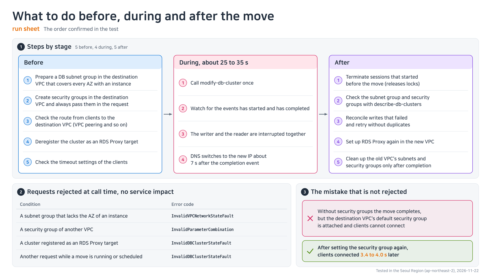
| When | What to do | The result behind it |
|---|---|---|
| Before | Give the DB subnet group in the destination VPC a subnet in every Availability Zone that has an instance | Rejected with InvalidVPCNetworkStateFault otherwise |
| Before | Create security groups in the destination VPC and name them in the request | Without them the default security group is attached and clients cannot connect |
| Before | Check the path and the security group rules from the clients to the destination VPC | The test went through VPC peering |
| Before | Deregister the RDS Proxy target | Rejected with InvalidDBClusterStateFault while registered |
| Before | Check the timeout settings of the clients | Without them an open connection stalled for 963 s |
| During | Call modify-db-cluster and watch for the start and completion events | 8.0 s and 27.8 s after the call |
| During | Announce the window on the basis that the writer and reader stop together | Writes interrupted 24.7 s, 31.3 s at most |
| After | Terminate the sessions that started before the completion time | Otherwise locks stay for about 360 s |
| After | Check the subnet group and security groups with describe-db-clusters, with a retry on the connection check | 7.0 s from the completion event to the DNS switch |
| After | Reconcile the writes counted as failed and retry without duplicates | 2 of 32 failed writes had been committed |
| After | Clean up the subnets and security groups of the old VPC only after the move is confirmed | Docs: Aurora needs them to return to the original VPC if the move fails |
Table 11. What to do around a move and the result behind each item. Results for db.r7g.large and Serverless v2 with one or two instances per cluster
The interruption may change with the number of instances and the load. I recommend measuring it first on a copy with the same configuration before applying it to a production cluster.
| No. | 출처Source | 종류Kind | 확인한 날Checked |
|---|---|---|---|
| 1 | Amazon Aurora now supports moving clusters to a different VPC | What's NewWhat's New | 2026-11-22 |
| 2 | Working with a DB cluster in a VPC | 공식 문서AWS docs | 2026-11-22 |
| 3 | Create with express configuration | 공식 문서AWS docs | 2026-11-22 |
| 4 | Amazon RDS event categories and event messages for Aurora | 공식 문서AWS docs | 2026-11-22 |
| 5 | Cloning a volume for an Amazon Aurora DB cluster | 공식 문서AWS docs | 2026-11-22 |
| 6 | modify-db-cluster | AWS CLI 참조AWS CLI reference | 2026-11-22 |
| 7 | IP Sysctl | Linux 커널 문서Linux kernel docs | 2026-11-22 |
| 8 | Database Connection Control Functions | PostgreSQL 문서PostgreSQL docs | 2026-11-22 |